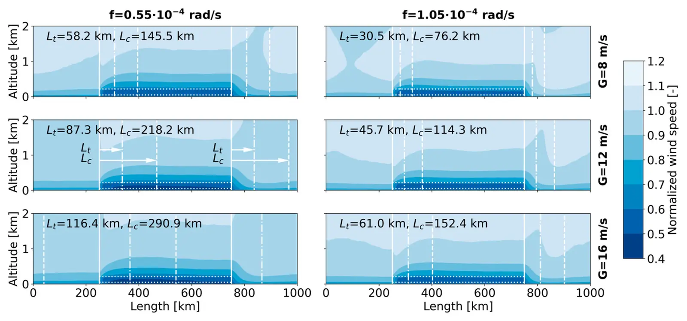

Spatial constraints in large-scale expansion of wind power plants
Key finding. As the spatial scale of a wind farm increases, mean generation per unit of land decreases and the extension of its wake shadow on neighbouring plants increases — which together bound both how large a single wind farm can usefully be and how widely large farms must be spaced.

What question did this research address?
Wind supplied 6.1 per cent of worldwide electricity generation in 2020. If that share is to grow enough to decarbonize electricity systems, future wind farms will be far larger than anything built so far.
Scale changes the physics. This paper asked two specific questions — how large a wind farm can become before its generation runs into energy replenishment limits, and how far apart large farms must be placed to avoid interfering with one another.
What did we find?
Two distinct penalties grow with scale. Within a farm, mean generation per unit of land declines as the area expands, because the atmosphere cannot replenish kinetic energy fast enough across a large footprint.
Outside the farm, the wake it casts extends further as the farm grows, reducing the wind available to downstream installations.
The first penalty limits how large it is worth building any individual farm — beyond a certain size, additional area yields sharply diminishing generation.
The second sets a minimum spacing between farms, since installations placed too close together compete for the same replenished energy rather than each drawing on its own.
Why does it matter?
Together these constraints mean wind capacity does not scale linearly with land. Estimates of national or global wind potential built by multiplying an area by a power density will overstate what is achievable once farms reach the sizes decarbonization would require.
The spacing requirement also makes wind development a coordination problem. One developer's farm reduces the resource available to a neighbour's, which is a form of interference that siting policy has to address explicitly.
Citation
Enrico G. A. Antonini and Ken Caldeira (2021). Spatial constraints in large-scale expansion of wind power plants. Proceedings of the National Academy of Sciences 118.
Related
- How much wind power can the atmosphere actually supply?
- Atmospheric pressure gradients and Coriolis forces provide geophysical limits to power density of large wind farms (Antonini and Caldeira, 2021)
- Geophysical potential for wind energy over the open oceans (Possner and Caldeira, 2017)